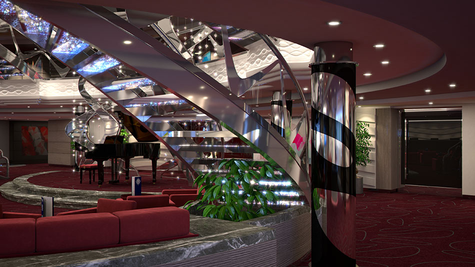

Overview
MSC Meraviglia is a Project Vista (MSC) class cruise ship, was built at STX France at the Chantiers de l'Atlantique shipyard in Saint Nazaire, France for MSC Cruises. The 171,598 ton, 19-deck, is the 4th largest cruise ship in the world and the biggest ever built in the European-based cruise line. Her first voyage was in June 2017. She is operating in western Mediterranean, namely: Genoa, Italy; Barcelona, Spain; and Marseille, France. In the fall of 2019, she will move to her new home in Miami, Florida, United States and be will sailing in the Carribean.
All decks of the ships are named after the wonders of the world; Meraviglia means 'wonder' in Italian. One of the special feature of this ship is the staircase, it is made of Swarovski crystals. Another feature is the two-deck interior promenade styled like a Mediterranean village. This area is covered by an LED dome ceiling that will serve as a "digital sky" showing images and visual shows.
"Project Vista" ships is designed for efficiency, with scrubber technology to neutralize carbon dioxide emissions; the ship is also water emission free.
State Rooms
MCS Meraviglia has about 2,200 rooms. She can accomodate 4500 passengers and 1500 crew. Each cabin comes in different sizes to accomodate the number of guests in a group:
- Interior: 172sq ft
- Oceanview: 161 to 183 sq ft
- Balcony: 204 sq ft
- Duplex Suite: 559 sq ft
- Yacht Club (is a ship within a ship), right at the front of the ship, across deck 14 to 19. Most of the Suites are here, except 8 duplex and corner suites, exclusive access to dining, bar and pools. It has 94 cabins.
- Deluxe Suite: 301 sq ft
- Royal Suite: 699 sq ft
- Family: 580 sq ft
- Studio Cabin: 172 sq ft

Oceanview Cabin with Balcony
Amenities
Exciting activities to do while on board:
- Dining, Restuarants and Bars
- Yacht Club
- Broadway theatre and Cirque du Soliel
- Sports and Fitness
- Kids Club
- Spa
- Swimming Pools and Slides
- F1 Simulator
- Bowling Alley
- Flight Simulator
- 4D Cinema
- Arcade
- Himalayan Rope Course 
Staircase made of Swarovski Crystals